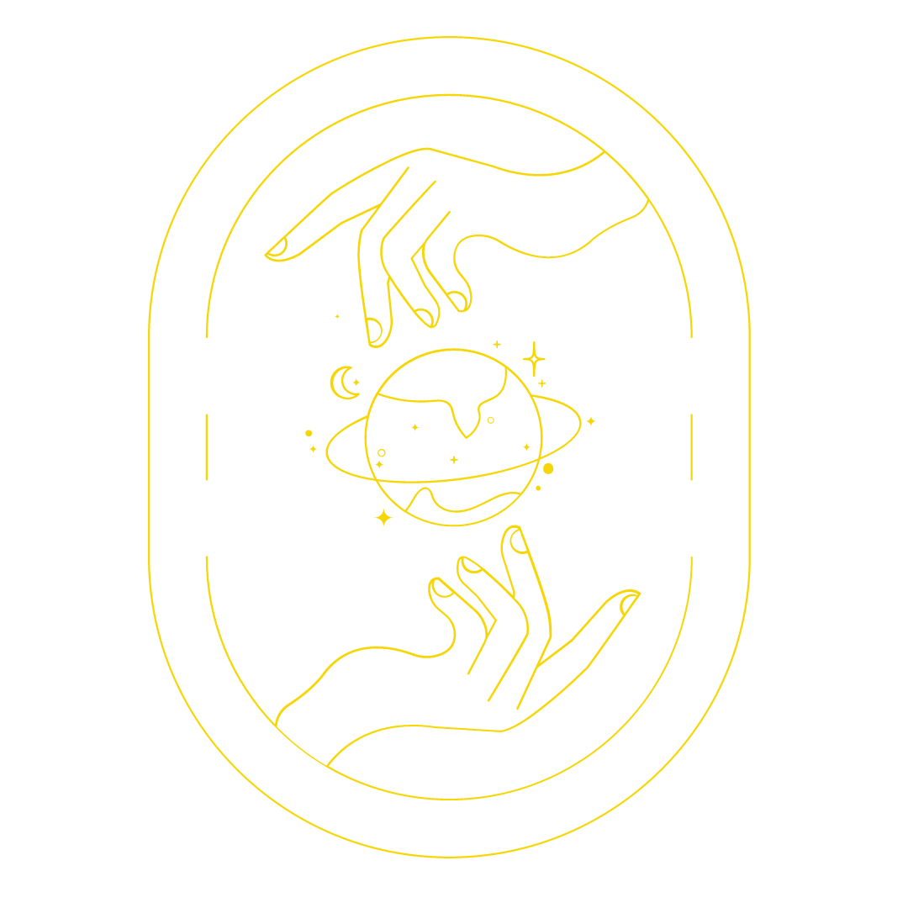

RECONECTATE CON VOS MISMX Y CON EL MUNDO
Bienvenidx a este universo maravilloso, que te va a permitir descubrirte y trasnformarte en profundidad. Todxs tenemos potenciales, luz y sombra dentro nuestro, y es necesario empezar a observarlos más de cerca para poder evolucionar.
Te invito a que te aventures en este proceso de auto-descubrimiento, del que vas a salir transformado. ¿Te animás a ser parte y cambiar la percepción de tu mundo tal como lo conocías?. Eric